인터넷정보관리사-2급 (2018-06-09 기출문제)
1과목: 인터넷의 이해
1. 다음 중 국제 인터넷 관련 기구와 담당 업무가 잘못 짝지어진 것은?
- IANA : 국제 인터넷 표준화 기구로, 인터넷의 운영·관리·개발에 대해 협의하고 프로토콜과 구조적 사안들을 분석하는 업무 수행
- ICANN : 국제 인터넷 주소관리 기구로, DNS의 기술적 관리, IP 주소 공간 할당 등을 수행
- W3C : 월드 와이드 웹을 위한 표준 개발 및 장려
- IAB : 인터넷 아키텍처 위원회로, ISOC에 의해 인터넷 기술 및 엔지니어링을 감독하는 기소 위원회
(정답률: 59%)

2. 다음 중 국제 인터넷 관련 기구가 아닌 것은?
- ITU
- IETF
- IRG
- EFF
(정답률: 62%)
3. 다음 중 인터넷의 시초인 ARPAnet의 구축 목적은?
- 금융
- 국방
- 학술
- 상업
(정답률: 85%)
4. 다음 중 IPv6 주소로 할당되는 유형이 아닌 것은?
- 유니캐스트 주소
- 멀티캐스트 주소
- 애니캐스트 주소
- 브로드캐스트 주소
(정답률: 75%)
5. 다음 중 최상위 도메인으로만 구성된 것은?
- com, pro, net
- org, ss, go
- net, com, wo
- kr, jp, to
(정답률: 66%)
6. 다음 중 인터넷상에서 숫자로 된 IP주소를 문자로 된 주소로 상호변환해 주는 시스템은?
- DNS
- WWW
- DHCP
- ISP
(정답률: 76%)
7. OSI 7계층에서 다음 역할을 수행하는 계층은?
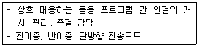
- 세션 계층
- 네트워크 계층
- 전송 계층
- 응용 계층
(정답률: 48%)
8. 다음 설명에 해당하는 OSI 모델의 계층은?
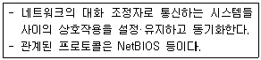
- 전송 계층
- 데이터링크 계층
- 세션 계층
- 네트워크 계층
(정답률: 55%)
9. 다음에서 설명하는 프로토콜은?
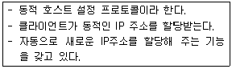
- DHCP
- SNMP
- SMTP
- NTP
(정답률: 72%)
10. 다음 중 인터넷 프로토콜에 대한 설명으로 가장 거리가 먼 것은?
- TCP/IP는 빈트 서프와 로버트 칸이 처음 설계하였다.
- TCP/IP는 1982년에 도입되었다.
- 컴퓨터 상호간 통신이 가능하며 신뢰성과 호환성이 뛰어나다.
- 현재 인터넷 기반의 프로토콜이며, 서로 다른 기종 간에는 사용되지 않는 프로토콜이다.
(정답률: 74%)
11. 다음 중 소셜 미디어에 대한 설명으로 가장 거리가 먼 것은?
- 사회적 관계 개념을 인터넷 공간으로 확대한 것이다.
- 웹 기술에 기반을 둔 사람과 사람의 관계 지향 서비스이다.
- 새로운 대중에게 새로운 뉴스를 전달하기 위한 목적이다.
- 기관의 대표성 공지가 아닌 개인의 정보를 전파할 수 있다.
(정답률: 48%)
12. 다음 중 채팅에서 자신을 대신하여 대화에 참여하는 가상의 인물을 가리키는 말은?
- 아이콘
- 아바타
- 스마일리
- 두문자어
(정답률: 86%)
13. 다음 중 불특정 다수를 대상으로 하는 클라우드 컴퓨팅 운용형태는?
- 퍼블릭 클라우드
- 프라이빗 클라우드
- 하이브리드 클라우드
- 커뮤니티 클라우드
(정답률: 63%)
14. 다음 중 클라우드 컴퓨팅 서비스 유형과 거리가 먼 것은?
- IaaS
- PaaS
- CaaS
- SaaS
(정답률: 69%)
15. 다음 중 현실의 이미지나 배경에 3차원 가상의 이미지를 겹쳐서 하나의 영상으로 보여주는 기술은?
- 가상현실
- 모바일 가상화
- 증강현실
- 아바타
(정답률: 71%)
16. 모든 인증을 하나의 시스템에서 할 수 있는 통합 로그인 인증방식은?
- SSO(Single Sign On)
- MSO(Multi Sign On)
- OSO(One Sign On)
- ISO(Integrity Sign On)
(정답률: 60%)
17. 다음에서 설명하는 근거리 무선통신 방식은?
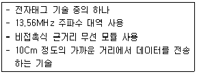
- RFID
- WiFi
- USN
- NFC
(정답률: 74%)
18. 저작권법에 대한 아래의 설명에서 괄호 안에 적합한 단어가 올바르게 작성된 것은?
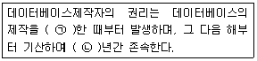
- ㉠ : 시작, ㉡ : 5
- ㉠ : 완료, ㉡ : 10
- ㉠ : 시작, ㉡ : 10
- ㉠ : 완료, ㉡ : 5
(정답률: 63%)
19. 다음 중 전자서명을 안전하게 이용할 수 있게 하기 위해 전자서명인증관리센터를 두고 있는 기관은?
- 한국인터넷진흥원
- 금융결제원
- 한국정보통신진흥원
- 한국전자인증
(정답률: 37%)
20. 다음 중 보험 가입현황, 회사의 판공비, 휴가, 투자 프로그램에 해당하는 개인정보 종류는?
- 소득정보
- 기타수익정보
- 신용정보
- 법적정보
(정답률: 67%)
21. 다음 중 개인정보의 종류가 다른 하나는?
- 혈액형
- 각종 신체테스트 정보
- 과거의 의료기록
- 보험(건강, 생명 등) 가입현황
(정답률: 72%)
22. 다음 개인정보 보호법의 벌칙과 관련하여 괄호 안에 들어갈 말이 알맞게 짝지어진 것은?
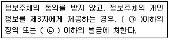
- ㉠ : 5년, ㉡ : 5천만원
- ㉠ : 5년, ㉡ : 3천만원
- ㉠ : 3년, ㉡ : 5천만원
- ㉠ : 3년, ㉡ : 3천만원
(정답률: 75%)
23. 다음 중 국내의 공인인증기관이 아닌 것은?
- 한국정보통신진흥원
- (주)코스콤
- 한국무역정보통신
- 금융결제원
(정답률: 55%)
24. 다음에서 설명하는 저작권의 기술적 보호 방법은?
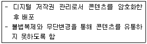
- DRM
- 접근제어
- 암호화 기술
- 스테가노그래피
(정답률: 59%)
25. 다음 중 특성이 다른 프로그램 하나는 무엇인가?
- 알집(ALZIP)
- 윈집(WinZIP)
- 윈라(WinRAR)
- 바이로봇(ViRobot)
(정답률: 76%)
26. 다음에서 설명하는 환경에 적합한 네트워크 토폴로지는 무엇인가?
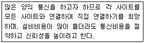
- 성형
- 트리형
- 버스형
- 망형
(정답률: 75%)
27. 다음에서 설명하고 있는 xDSL은?
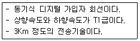
- ADSL
- HDSL
- SDSL
- VDSL
(정답률: 42%)
28. 다음 중 웹 앱을 네이티브 앱으로 포장하는 형태로 개발한 것은 무엇인가?
- 하이브리드 앱
- 모바일 웹
- 시맨틱 웹
- 네이티브 앱
(정답률: 46%)
29. 다음 중 잘 알려진 포트의 쌍으로 올바른 것은?
- FTP - 22
- DNS - 53
- HTTP - 90
- POP - 100
(정답률: 67%)
30. 다음 중 단독으로 사용되는 태그가 아닌 시작과 끝을 알리는 태그 쌍으로만 사용되는 것은?
- <br>
- <p>
- <hr>
- <tr>
(정답률: 56%)
31. 다음 중 멀티미디어의 개발 과정 순서가 올바른 것은?
- 디자인 -> 도구 선택 -> 콘텐츠 생성 -> 멀티미디어 저작 -> 테스팅
- 도구 선택 -> 콘텐츠 생성 -> 디자인 -> 멀티미디어 저작 -> 테스팅
- 디자인 -> 콘텐츠 생성 -> 도구 선택 -> 멀티미디어 저작 -> 테스팅
- 도구 선택 -> 디자인 -> 콘텐츠 생성 -> 멀티미어어 저작 -> 테스팅
(정답률: 52%)
32. 다음 중 벡터 포맷의 확장자로만 구성된 것은?
- AI, CDR, VML
- AI, XPS, GIF
- BMP, DWG, VRML
- JPG, CDR, AMF
(정답률: 36%)
33. 다음 중 트위닝이라는 기법과 관련이 깊으며, 한 이미지가 다른 이미지로 합성·변형되는 과정을 뜻하는 멀티미디어 용어는?
- 모핑
- 메조틴트
- 리터칭
- 오버프린트
(정답률: 70%)
2과목: 인터넷 자원 탐색
34. 다음 설명에 해당하는 것은?
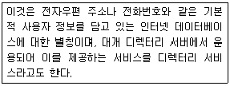
- 홈페이지
- 포털사이트
- 옐로 페이지
- 화이트 페이지
(정답률: 59%)
35. 다음 중 웹 브라우저가 지원하는 마크업 언어를 모두 고른 것은?
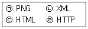
- ㉠, ㉡
- ㉠, ㉣
- ㉡, ㉢
- ㉢, ㉣
(정답률: 63%)
36. 다음 중 웹 브라우저의 설명으로 알맞은 것을 모두 고른 것은?
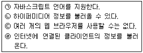
- ㉠, ㉡
- ㉠, ㉣
- ㉡, ㉢
- ㉢, ㉣
(정답률: 53%)
37. 다음 그림은 웹 브라우저에 대한 정보 검색 결과이다. ㉠에 대한 설명으로 바른 것은?
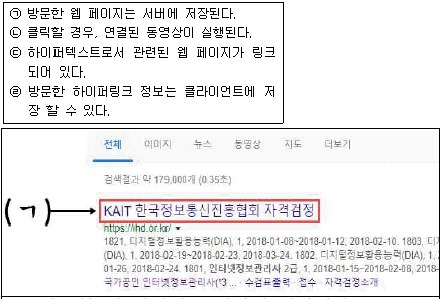
- ㉠, ㉡
- ㉠, ㉢
- ㉡, ㉣
- ㉢, ㉣
(정답률: 58%)
38. 다음 중 텍스트 기반의 웹 브라우저를 모두 고른 것은?
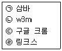
- ㉠
- ㉢
- ㉠, ㉡, ㉣
- ㉠, ㉡, ㉢
(정답률: 65%)
39. 다음 중 '링크스(Lynx)'를 웹에서 검색하고자 할 때, 적절한 검색 키워드를 모두 고른 것은?
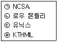
- ㉠, ㉡
- ㉠, ㉣
- ㉡, ㉢
- ㉢, ㉣
(정답률: 52%)
40. 다음 중 익스플로러의 주소 표시줄의 '검색 창'에 대한 설명으로 옳은 것은?
- 검색결과는 새 창으로 제공한다.
- 단축키인 Ctrl + F를 활용할 수 있다.
- 검색 제공업체인 Bing은 변경할 수 없다.
- 특정 검색엔진을 이용하여 정보를 검색할 수 있다.
(정답률: 58%)
41. 다음 중 크롬의 옴니박스(Omnibox)에서 북마크와 관련된 모양은?
- 네모 모양
- 별표 모양
- 종이 모양
- 돋보기 모양
(정답률: 71%)
42. 익스플로러의 웹 페이지 저장 형태 중, '웹 페이지 보관 파일'에 해당하는 확장자는?
- *.txt
- *.html
- *.htm
- *.mht
(정답률: 46%)
43. 다음 중 크롬의 설정메뉴에서 브라우저의 개인정보 및 보안 옵션에 해당하는 것은?
- 가능한 경우 하드웨어 가속 사용
- 특정 페이지 또는 페이지 모음 열기
- 다운로드 전에 각 파일의 저장 위치 확인
- 위험한 사이트로부터 사용자와 기기 보호
(정답률: 71%)
44. 다음 사례에서 활용할 수 있는 크롬의 메뉴는?
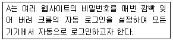
- 인증서 관리
- 비밀번호 관리
- 자동완성 설정
- 접근성 기능 추가
(정답률: 63%)
45. 그림은 익스플로러 인터넷 옵션 내의 설정 메뉴이다. 이 메뉴와 관련된 인터넷 옵션 탭은?
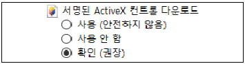
- 고급
- 보안
- 일반
- 개인 정보
(정답률: 61%)
46. 다음은 로봇 배제 표준을 설정한 것이다. 이에 대한 설명으로 알맞은 것은?
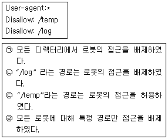
- ㉠, ㉡
- ㉠, ㉢
- ㉡, ㉣
- ㉢, ㉣
(정답률: 57%)
47. 다음 중 로봇 에이전트 방식의 단점에 해당하는 것은?
- 매뉴얼 인덱스 방식보다 정보의 질이 낮다.
- 매뉴얼 인덱스 방식보다 정보의 양이 적다.
- 직접 수작업으로 입력하여 정보의 추가가 느리다.
- 비정기적인 작업으로 데이터 갱신 주기가 느리다.
(정답률: 61%)
48. 다음 검색엔진의 공통적인 분류는?
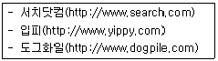
- 메타 검색엔진
- 주제별 검색엔진
- 키워드 검색엔진
- 하이브리드 검색엔진
(정답률: 64%)
49. 다음 중 웹 로봇의 사용 분야에 대한 설명을 모두 고른 것은?
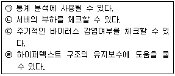
- ㉠, ㉡
- ㉠, ㉣
- ㉡, ㉢
- ㉢, ㉣
(정답률: 43%)
50. 다음 사례에서 재현율과 정확률이 옳게 연결된 것은?
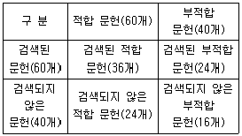
- 재현율 : 60%, 정확률 : 40%
- 재현율 : 40%, 정확률 : 60%
- 재현율 : 60%, 정확률 : 35%
- 재현율 : 60%, 정확률 : 60%
(정답률: 50%)
51. 다음 키워드 배치 전략 중 키워드 연관 전략과 가장 관련이 있는 것은?
- 문서 내에 제목에 키워드를 기입한다.
- 다른 사이트의 링크된 순위에 점수를 매긴다.
- 자신의 사이트와 연관된 키워드를 문서 내에 반복적으로 기입한다.
- 사이트 내에 다양한 문장들을 구성하여 키워드를 적절히 문구에 넣는다.
(정답률: 48%)
52. 다음 설명은 검색 결과의 제공 방식 중, 어떤 키워드 배치 전략에 해당되는 것인가?
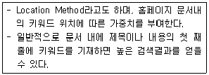
- 키워드 연관
- 키워드 무게
- 키워드 근접
- 키워드 돌출
(정답률: 54%)
53. 다음 중 전문 서퍼(Suffer)들에 의해 관리되는 정보 검색 결과의 제공방식은?
- 지식 검색
- 사이트 검색
- 디렉터리 검색
- 카테고리 검색
(정답률: 45%)
54. 다음은 빙(Bing) 검색 엔진의 라이선스 유형별로 이미지를 필터링하는 설명이다. 이에 해당하는 필터링 기준 옵션은?
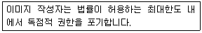
- 공용 도메인
- 무료 공유 및 사용
- 무료 수정, 공유 및 사용
- 상업적으로 무료 공유 및 사용
(정답률: 44%)
55. 다음 중 네이버의 밴드(Band) 서비스와 유사한 구글의 서비스는?
- Google+
- Google Duo
- Google Allo
- Google Cast
(정답률: 50%)
56. 다음 중 국외에서 개발된 검색엔진을 모두 고른 것은?
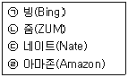
- ㉠, ㉡
- ㉠, ㉣
- ㉡, ㉢
- ㉢, ㉣
(정답률: 67%)
57. 다음 사례의 A에게 가장 적절한 네이버 제공 서비스는?
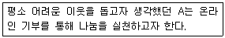
- 밴드
- 라인
- 지식IN
- 해피빈
(정답률: 78%)
58. 다음 사례에 제시된 정보관리사의 역할로 가장 적합한 것은?
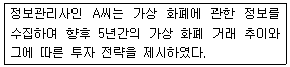
- 정보 분석가
- 정보의 선택자
- 정보 컨설턴트
- 정보의 균등분배자
(정답률: 65%)
59. 다음 설명에 해당하는 검색 형식은?
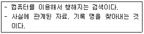
- 문헌 검색
- 사실 검색
- 질문 검색
- 확정 검색
(정답률: 50%)
60. 다음 사례에 해당하는 정보를 지칭하는 용어는?
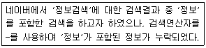
- 개비지
- 리키지
- 불용어
- 시소러스
(정답률: 46%)
61. 다음 1차 정보 중 비공식적으로 유통되는 유형에 해당하는 것은?
- 잡지
- 학술지
- 특허정보
- 출판 전 간행물
(정답률: 63%)
62. 다음 설명에 해당하는 정보원의 선정 요소는?
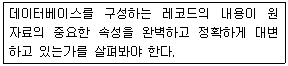
- 완전성
- 일관성
- 최신성
- 권위와 신뢰성
(정답률: 49%)
63. 다음 사례에서 알 수 있는 정보의 특성은?
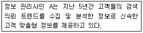
- 무형성
- 시한성
- 축적효과성
- 표현다양성
(정답률: 66%)
64. 다음은 인터넷 정보원에 따른 분류 예시이다. 이 자료들을 종합하여 요약하거나 재편성하여 제공하는 정보원의 예로 바른 것은?
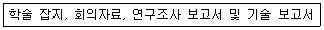
- 단행본
- 백과사전
- 학위 논문
- 해설 요약
(정답률: 36%)
65. 다음 정보의 유형 중 '이용주체의 효용성'에 따른 분류에 해당하는 것은?
- 1차 정보
- 외부 정보
- 형식 정보
- 수단적 정보
(정답률: 53%)
66. 국내에서 운영하는 인터넷 정보원을 다음에서 모두 고른 것은?
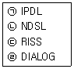
- ㉠, ㉡
- ㉠, ㉣
- ㉡, ㉢
- ㉢, ㉣
(정답률: 56%)
3과목: 인터넷 윤리
67. 다음에서 설명하는 인터넷 윤리의 기능은?
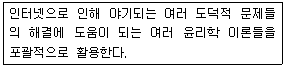
- 세계윤리
- 책임윤리
- 처방윤리
- 종합윤리
(정답률: 59%)
68. 다음 중 인터넷 중독의 원인과 가장 거리가 먼 것은?
- 자기 통제력이 낮을수록 인터넷 중독 성향이 높다.
- 가족 사이에서 고립감을 느끼는 사람일수록 인터넷 중독에 취약하다.
- 자존감이 높을수록 인터넷 중독 성향이 높다.
- 인터넷의 속성인 익명성, 현실탈출, 새로운 자아구현 등이 중독을 유발할 수 있다.
(정답률: 72%)
69. 다음 중 공개게시판을 이용할 때 지켜야할 네티켓으로 가장 거리가 먼 것은?
- 게시물에 자신의 이름과 아이디를 남긴다.
- 주제를 앞에 두어 두괄식 문장으로 쓰는 것이 좋다.
- 읽는 사람을 배려해 제목에 [부탁][요청] 등을 넣지 않는다.
- 게시물은 짧고 명확하게 쓰며, 내용을 잘 설명할 수 있는 제목을 붙인다.
(정답률: 61%)
70. 다음 중 상업 광고를 포함한 스팸 등에 대해 수신자가 메일 수신을 허용하지 않으면 메일을 보낼 수 없게 규제하는 것은?
- IP실명제
- 인터넷 실명제
- 게이트키핑
- 옵트아웃
(정답률: 65%)
71. 다음 괄호 안에 들어갈 가장 적절한 단어를 순서대로 나열한 것은?
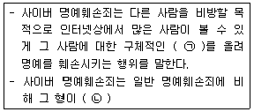
- ㉠-거짓정보, ㉡-가중된다.
- ㉠-사실 또는 거짓정보, ㉡-가중된다.
- ㉠-거짓정보, ㉡-가중되지 않는다.
- ㉠-사실 또는 거짓정보, ㉡-가중되지 않는다.
(정답률: 65%)
72. 다음 중 피싱 사기를 예방할 수 있는 방법으로 가장 거리가 먼 것은?
- 사기성 이벤트에 현혹되어 개인정보를 제공하지 않는다.
- 금융거래 사이트는 인터넷 주소를 직접 입력하여 접속한다.
- P2P의 다운로드 파일은 출처를 확인하여 다운여부를 결정한다.
- 백신프로그램은 자주 업데이트하여 검사 하고 실시간 감시 기능은 반드시 꺼둔다.
(정답률: 65%)
73. 다음 중 근거 없는 각종 루머들이 IT 기기나 미디어를 통해 확산되어 사회, 정치, 경제, 안보에 치명적 위기가 초래함을 뜻하는 것은?
- 네카시즘
- 인포데믹스
- 사이버 모욕
- 사이버 스토킹
(정답률: 63%)
74. 다음 중 사이버 폭력의 특징과 가장 거리가 먼 것은?
- 피해가 빠르게 확산된다.
- 쉽게 저지르는 경향이 있다.
- 피해자와 가해자를 찾기 쉽다.
- 자신도 모르는 사이에 할 수도 있다.
(정답률: 75%)
75. 다음 중 한국정보화진흥원에서 제시한 인터넷 중독의 유형은?
- 사이버 교제 중독
- 네트워크 강박증
- 휴대폰 중독
- 정보 중독
(정답률: 49%)
76. 다음 인터넷 중독의 원인 중 개인적 성격 특성과 관련된 것은?
- 우울증
- 익명성
- 비대면성
- 재미와 호기심
(정답률: 50%)
77. 다음 중 인터넷 중독의 원인으로 가장 거리가 먼 것은?
- 가족과의 여가 활동 부족
- 정부의 역할 증가
- 약한 자아 존중감
- 편리성
(정답률: 76%)
78. 한국형 인터넷 중독 자가진단 프로그램인 K-척도로 분류할 때, 고위험사용자군에 해당하는 중·고등학생이 하루 인터넷에 접속하는 시간은?
- 2시간 이상
- 4시간 이상
- 6시간 이상
- 8시간 이상
(정답률: 56%)
79. 다음 중 인터넷 중독 예방 방법으로 가장 거리가 먼 것은?
- 컴퓨터가 있는 방에는 시계를 없앤다.
- 인터넷 사용 이외에 취미활동시간을 늘린다.
- 컴퓨터를 사용하기 전에 다른 할 일을 먼저 한다.
- 컴퓨터를 사용하기 전에 인터넷으로 할 일에 대한 로드맵을 작성한다.
(정답률: 77%)
80. 다음 중 전문 인터넷 중독 상담 기관이 아닌 것은?
- 아이윌(iwill)센터
- 스마트쉼센터
- 에버그린사회복지센터
- 청소년미디어중독예방센터
(정답률: 68%)